Полный визуальный язык бьюти-студии: логотип, фирменная одежда команды, документация, упаковка, digital и интерьер — собранные в один тёплый цитрусовый характер.
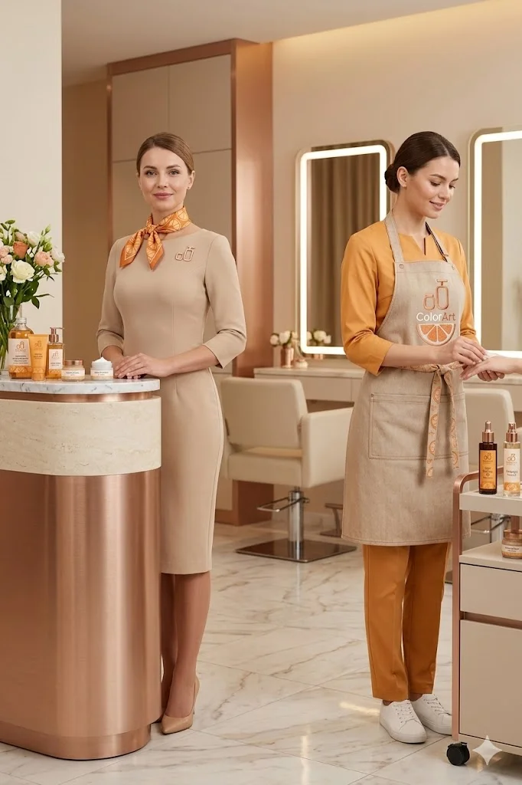
Мы собрали айдентику с нуля вокруг одного образа — апельсиновой дольки и тёплого оранжевого. Дольку превратили в гибкую графическую систему: знак, паттерн, текстуру и ритм для всех носителей.
Логотип-дуэт из косметических флаконов читается как забота и уход, а сочный цвет задаёт настроение — лёгкое, витаминное, заряжающее. Цель: айдентика, которую узнают по одному фрагменту дольки.
Основной вертикальный лок-ап и горизонтальная версия. Знак — пара косметических флаконов, нарисованных одной уверенной линией.
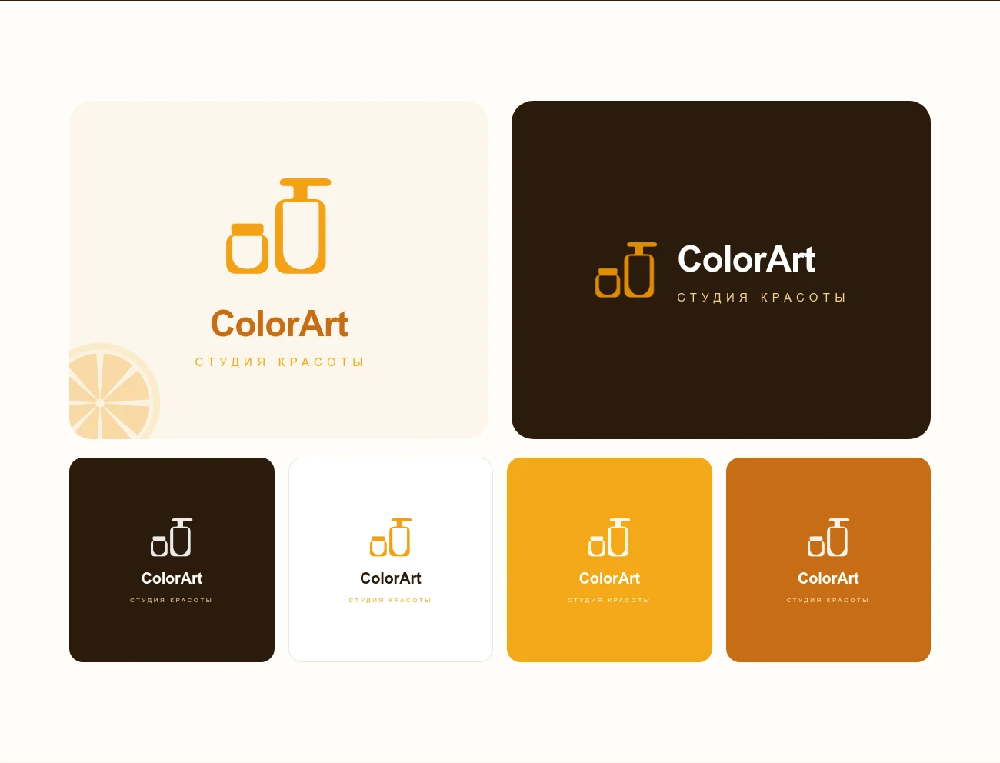
Современный геометрический гротеск в духе Kyiv Type Sans — чистый, дружелюбный и отлично работающий в крупных заголовках и мелком тексте.
Заголовки — 700–800, плотный трекинг. Текст — 400, увеличенный интерлиньяж для воздуха. Капсы и трекинг — для подписей и навигации.
Восемь долек складываются в бесшовный модуль — на упаковке, стойке ресепшн и в социальных сетях.
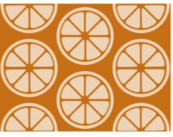
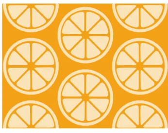
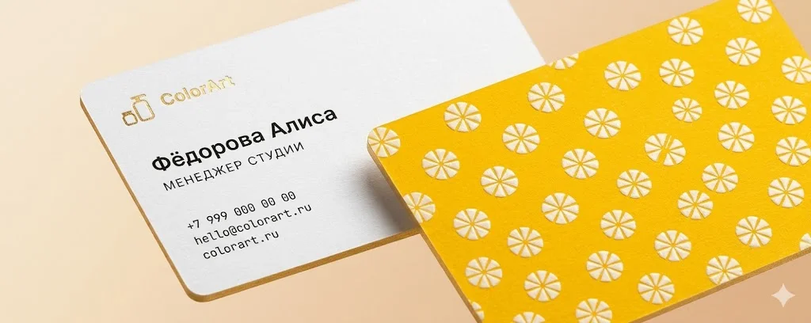
Папка, фирменный бланк и конверт с цитрусовым паттерном — деловая документация, которая остаётся узнаваемой даже в строгом формате.
«Красота в деталях» — внутренний слоган документации. Лок-ап вверху, паттерн внизу, тёплая бумага — единый код на каждом носителе.
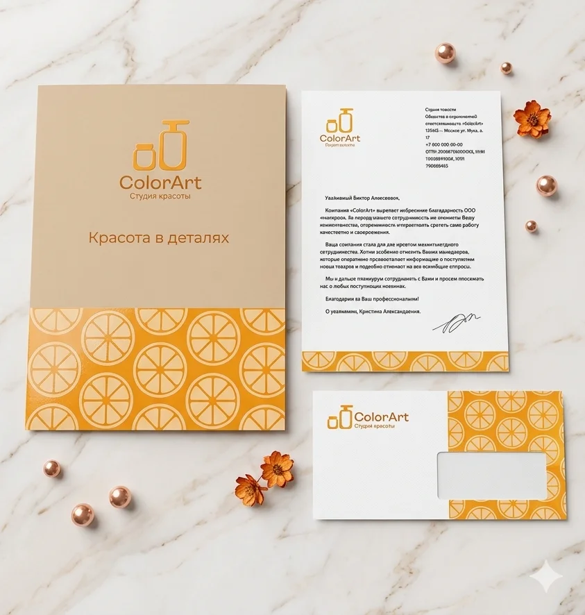
Световой короб с лок-апом над входом и боковая блейд-вывеска со знаком — видно с обеих сторон улицы.
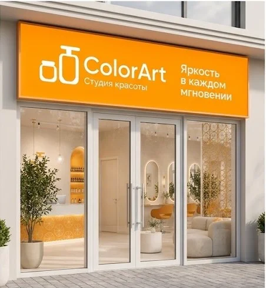
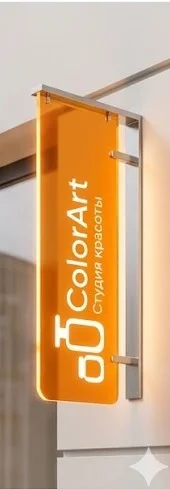
Флаконы повторяют силуэт знака. Цвет кодирует продукт, паттерн и лок-ап связывают линейку в семью.
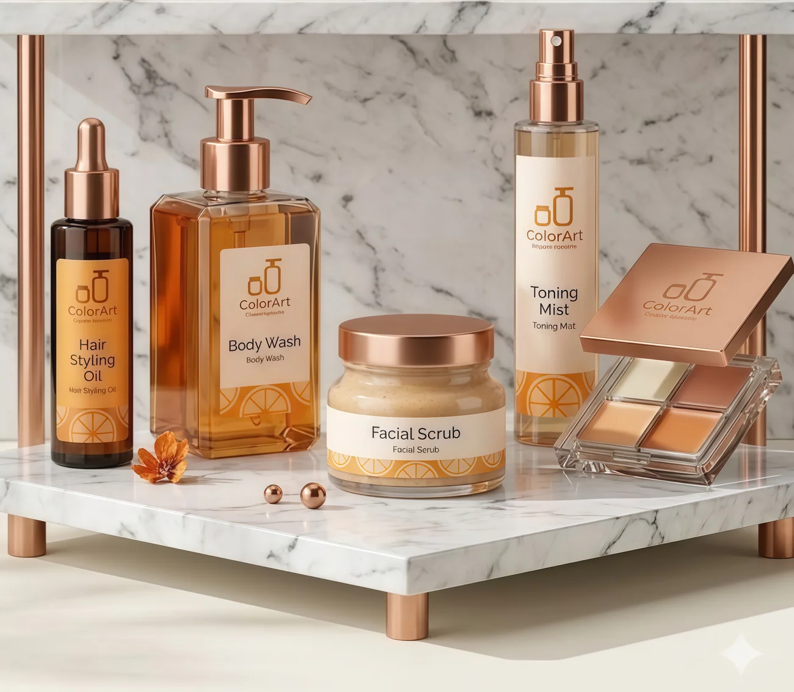
Профиль собран в единую систему: фирменный аватар-знак, тематические хайлайты-кружки и лента, где фото студии чередуются с плашками-акциями и цитрусовым паттерном.
Ритм «фото — оффер — паттерн» держит ленту цельной с первого экрана. Акции, услуги и отзывы — в тёплых кружках единого стиля, а готовые макеты офферов и цитат ускоряют ежедневный контент.
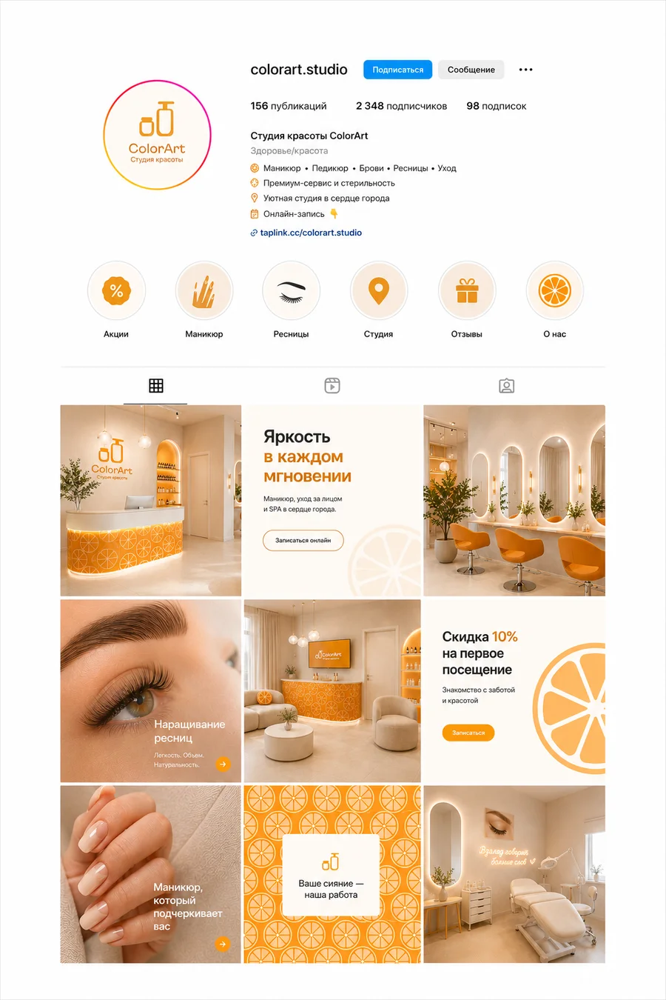
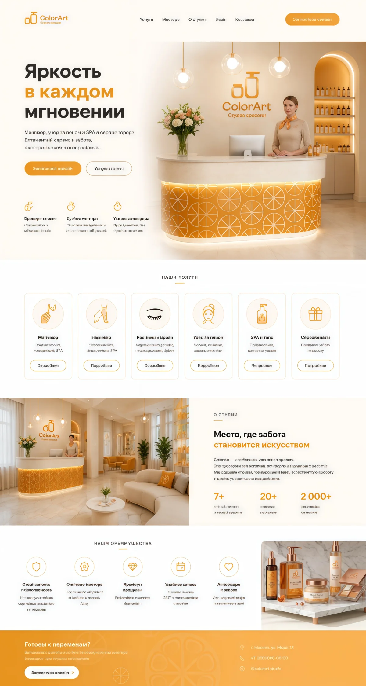
Тёплый свет, кремовые стены и оранжевые акценты. Дольки появляются на стойке ресепшн, в декоре и навигации по залу.
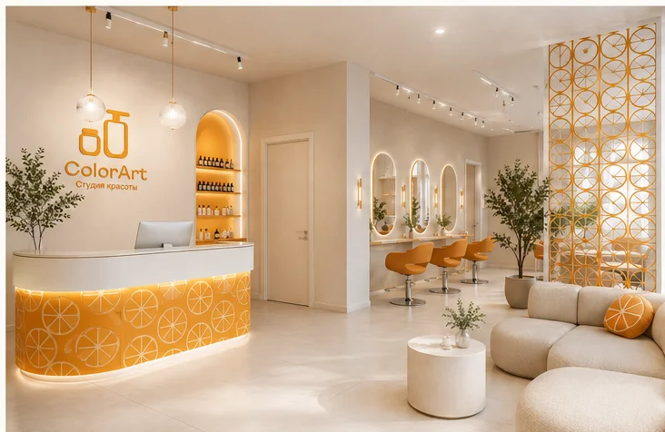
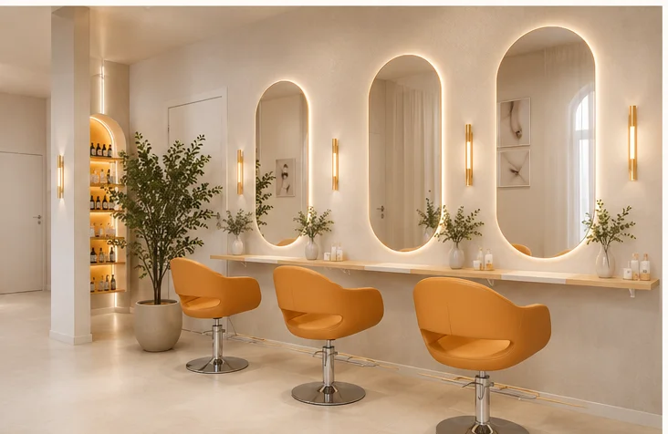
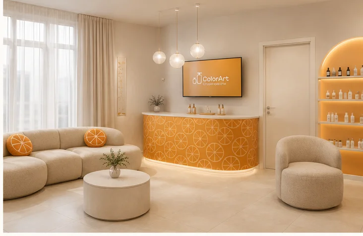
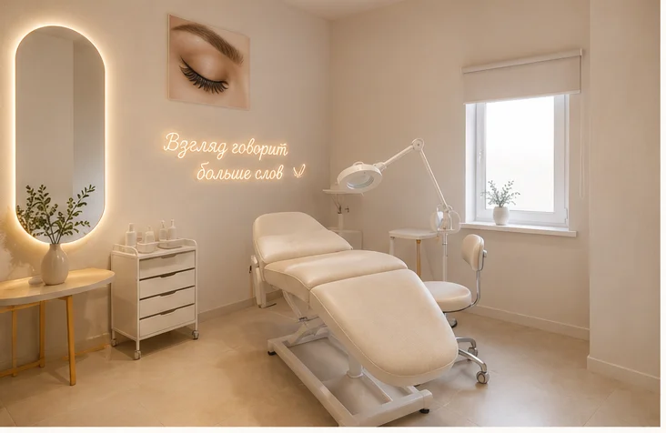
От вывески до конверта — один цитрусовый характер: бренд узнаётся по фрагменту дольки на любом носителе.